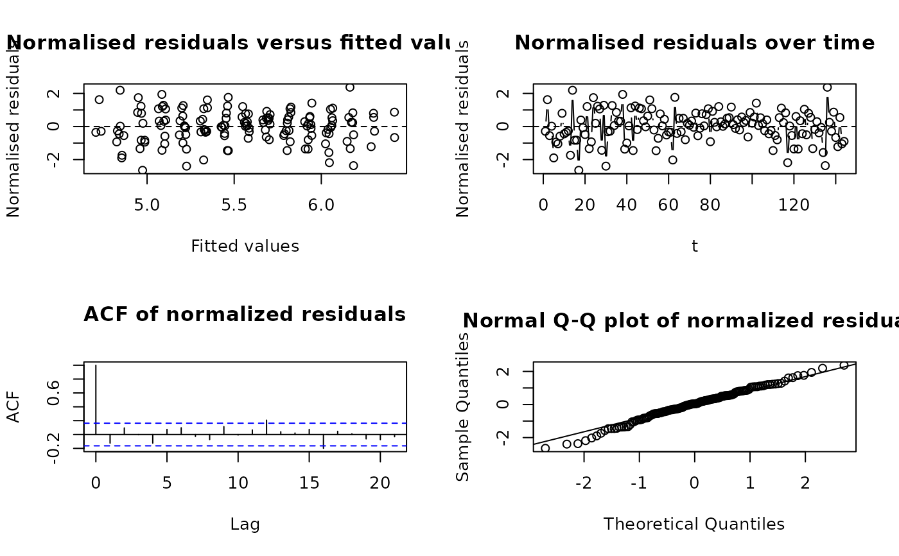
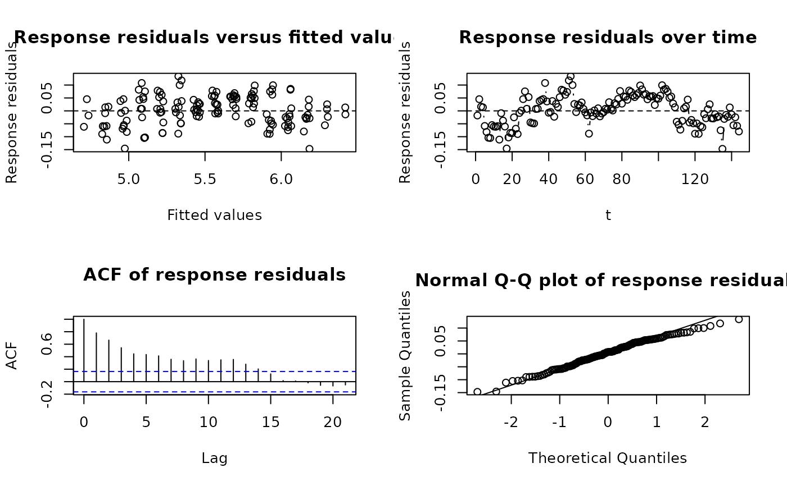

`tslm()` is a teaching-friendly wrapper for fitting linear models with optional AR(p) error structures. Students specify the mean model using an ordinary formula and add an `ar(p)` term to request autoregressive errors.
Usage
tslm(formula, data = parent.frame(), time, method = "REML", ...)Arguments
- formula
a model formula. Use `ar(p)` in the right hand side to specify AR(p) errors, for example `y ~ x + ar(1)`.
- data
an optional data frame containing the variables in the model. If omitted, variables are taken from the calling environment.
- time
optional unquoted or quoted name of the time variable in `data` or in the calling environment. If omitted for an AR model, the row order of the model data is used.
- method
fitting method passed to [nlme::gls()] for AR models. Defaults to `"REML"`.
- ...
additional arguments passed to [stats::lm()] or [nlme::gls()].
Value
An object of class `tslm`, containing the original formula, the mean formula fitted internally, the AR order, the time variable if supplied, and the underlying fitted model.
Details
When no `ar(p)` term is present, `tslm()` fits an ordinary [stats::lm()] model. When an `ar(p)` term is present, `tslm()` fits a [nlme::gls()] model with an AR(p) correlation structure using [nlme::corARMA()]. The `ar(p)` term changes the error model, not the mean-model terms printed in the formula.
The formula describes the mean model, just as it does for [stats::lm()]. The special term `ar(p)` is removed from the mean model before fitting and is used only to specify the correlation structure for the errors. For example, `log(passengers) ~ t + month + ar(1)` fits a trend and seasonal mean model with AR(1) errors.
For AR-error models, `time` should usually name the variable giving the time order of the observations. If `time` is omitted, `tslm()` fits the model using the row order of the model data and gives a warning so that this assumption is visible.
Diagnostic methods for AR-error models use normalised residuals by default, because these residuals account for the fitted correlation structure. Use `residualType = "response"` when the raw response residuals are required. `"normalised"` and `"normalized"` are both accepted for compatibility.
Examples
data(beer.df)
fit = tslm(beer ~ t + ar(1), data = beer.df, time = t)
coef(fit)
#> (Intercept) t
#> 1258.489074 4.578942
data(airpass.df)
fitAr = tslm(log(passengers) ~ t + month + ar(1),
data = airpass.df,
time = t
)
summary(fitAr)
#> Time series linear model with AR(1) errors
#>
#> Mean model:
#> log(passengers) ~ t + month
#>
#> Error model:
#> AR(1), estimated Phi = 0.8033
#> Time variable: t
#>
#> Coefficients:
#> Estimate Std. Error t value Pr(>|t|)
#> (Intercept) 4.7263258 0.0308562 153.173 < 2e-16
#> t 0.0099879 0.0003446 28.985 < 2e-16
#> monthFeb -0.0208698 0.0110153 -1.895 0.0603
#> monthMar 0.1103126 0.0145915 7.560 6.23e-12
#> monthApr 0.0798116 0.0167248 4.772 4.80e-06
#> monthMay 0.0780524 0.0180375 4.327 2.97e-05
#> monthJun 0.2006831 0.0187676 10.693 < 2e-16
#> monthJul 0.3050006 0.0190189 16.037 < 2e-16
#> monthAug 0.2959858 0.0188225 15.725 < 2e-16
#> monthSep 0.1515455 0.0181509 8.349 8.50e-14
#> monthOct 0.0135014 0.0169054 0.799 0.4259
#> monthNov -0.1301807 0.0148595 -8.761 8.62e-15
#> monthDec -0.0163608 0.0114348 -1.431 0.1549
#>
#> Residual standard error: 0.06156 on 131 degrees of freedom
#> AIC: -424.4
#> BIC: -381.3
anova(fitAr)
#> Analysis of Variance Table
#> Response: log(passengers)
#> Tests of model terms allowing for AR errors
#>
#> Df F value Pr(>F)
#> t 1 837.30 <0.001
#> month 11 83.37 <0.001
plot(fitAr)

plot(fitAr, residualType = "response")
